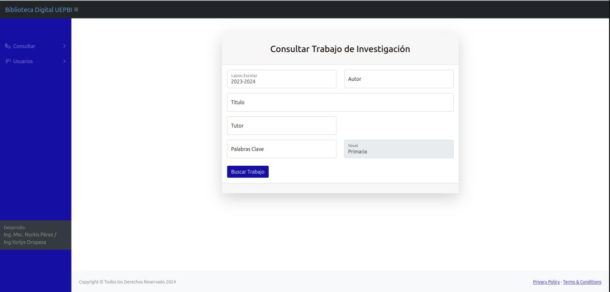
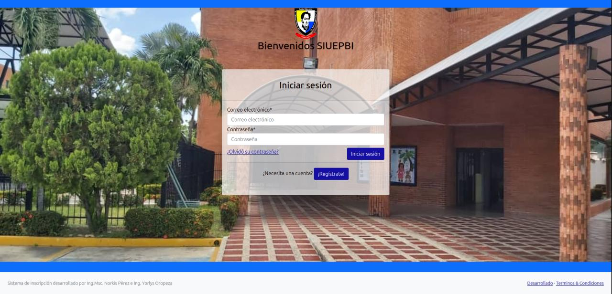

SYS.MOD.01
Backend Robusto
Experto en arquitecturas escalables con Django y Laravel. Construyo cimientos sólidos que soportan la carga sin pestañear.
Como Ingeniero de Sistemas y Desarrollador Freelance, mi enfoque no es solo escribir líneas de código en Python o PHP, sino optimizar procesos reales. Mi especialidad es Odoo ERP, donde transformo módulos estándar en herramientas de precisión corporativa.
Pero no me quedo en el backend tradicional: estoy obsesionado con la integración de Inteligencia Artificial. Desarrollo agentes de voz y de código que automatizan lo que antes tomaba horas, utilizando Ingeniería de Prompts para que la IA trabaje para ti, y no al revés.
Soy un aprendiz perpetuo. Si no estoy desplegando un módulo, probablemente me encuentres en Platzi dominando la siguiente tecnología disruptiva. Mi inglés está en nivel A2 (en constante debug y mejora), pero mi código habla un lenguaje universal: eficiencia.
Experto en arquitecturas escalables con Django y Laravel. Construyo cimientos sólidos que soportan la carga sin pestañear.
Si tiene una API, puedo conectarlo. Especialista en REST y sistemas externos. Fluidez en el intercambio de datos.
Integración de LLMs en flujos de trabajo reales (Voice & Code Agents). Hago que la IA trabaje para tu negocio.
Manejo sólido de los fundamentos de HTML, CSS y JavaScript para que el frontend no parezca un error 404.
Despliegue seguro en entornos Linux y Docker. Contenerización y estabilidad garantizada en producción.
¿Hablamos de tu próximo proyecto? Estoy disponible para consultorías técnicas y desarrollo a medida.
Inicializar Protocolo de Contacto_Sistemas desplegados y probados en entornos de producción. Aquí el código se convierte en soluciones operativas.

Sistema de Biblioteca que permite a la escuela poder cargar y ver documentos de Tesis y Proyectos de grados realizados en la institución por estudiantes. Digitalización integral del archivo académico.

Sistema de Inscripción para el colegio UEPBI, con registro de estudiantes, representantes, padres, pagos, con generador de planilla de inscripción.
Sistemas en línea y listos para recibir parámetros. Selecciona tu protocolo de comunicación preferido para establecer contacto directo.
© 2026 YORLYS.SYS // TODOS LOS DERECHOS RESERVADOS.